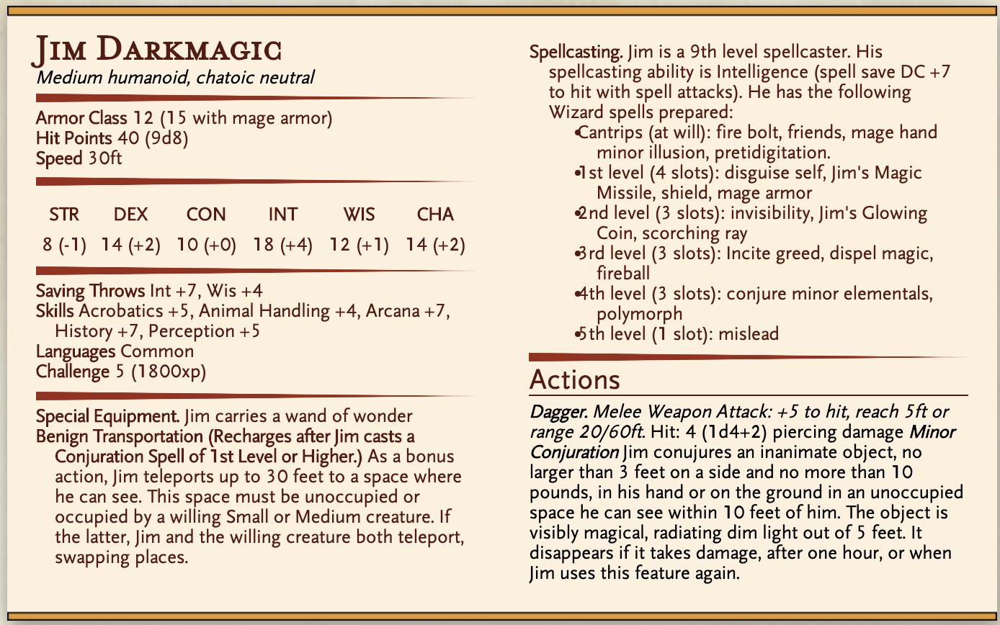

Jacob Ashbridge, Baron¶
A garish baron with an exceedingly large plantation on the outskirts of Kassoon. Recently he’s decided to spend his fortune ensuring that he and his wife Persephone Ashbridge live throughout eternity resting in wild and difficult locations. Having sought out The Tomb of the Meridian Lord, he and his wife Persephone have bitten off more than they can chew when a deadly poltergeist and a devious carrion crawler halt construction.
After the Adventurers successfully returned Persephone Ashbridge to him, he told the players that he’s always got work for reliable employees.
Jeremy Snoot¶
The most easily intimidated customs official in the city of Kassoon, From blueprints of government buildings to shipping manifests, he’s your halfling.
Very timid, somewhat like Porky Pig if Porky pig had no backbone.
Jim Darkmagic¶
Have a magical day!
Jim Winifred Darkmagic III is the scion of a mysterious, multiplanar wizarding family. Jim’s arcane pedigree has long preceded him, incorporating equally healthy amounts of magical training and innate eldritch prowess. However, despite a natural talent that could have allowed him to make a name for himself as a court wizard, or perhaps “that strange old man in the village,” Jim’s original penchant was not for the magic of scroll or spell, but for the stage.
As an entertainer and purveyor of the “Jim Darkmagic Experience,” the legendary mage can often be found in markets and town squares, performing features of mundane legerdemain. The renown he has earned for these feats is nearly equaled by the reputation that follows him as chief arcanist (and occasional arsonist) for Acquisitions Incorporated. And although his skills as an adventurer and real wizard remain highly sought after, Jim looks forward to a well-earned retirement, at which point he hopes to become a “real wizard” – by which he means a fake wizard – full time.
Jim Darkmagic (High Elf) is the owner/CEO of the Acquisitions Incorporated (AI) company, which franchised Hot Mess of Brie out of the city of Kasoon
Not much is known about Jim Darkmagic other than he is a very powerful wizard, known for using the magic at-will to momentarily inconvenience other during regular conversations. Additionally Darkmagic has been known to perform powerful ritualistic magic. In the beginning of the Incorporation of Hot Mess of Brie, he and a few other mages teleported the entire Ouroboros Temple to the city of Kassoon to make it more readily accessible to a town.
Jim Darkmagic publicly resents the influence that The Grand Vizer Faen has on all local politics (and thus AI)
{kind=link}
Jolruzai Runzehr¶
Overseer of plant sales and assassinations merchant lord in Kassoon.
Informed by Kirnih Oceantalon, owner of A Florist’s Delight, that Boxwood Clovers was a new, unregulated business on the scene. In response, she tightened import regulations and sent agents undercover to threaten Tifter into submitting to her commercial control. When nothing changed, it was Zhanti who convinced her to do nothing. In exchange for tax-free armour for her assassins, Jolruzai would no longer interfere with Boxwood Clovers.
Jolruzai grew more frustrated that a new business (that she didn’t control) was hoarding a big proportion of the plant market’s money. With a little persuasion from the local stall holders, she granted Kirnih a sanction to kill Tifter by poison, her specialty. Kirnih’s poison, however, only sent Tifter to sleep.